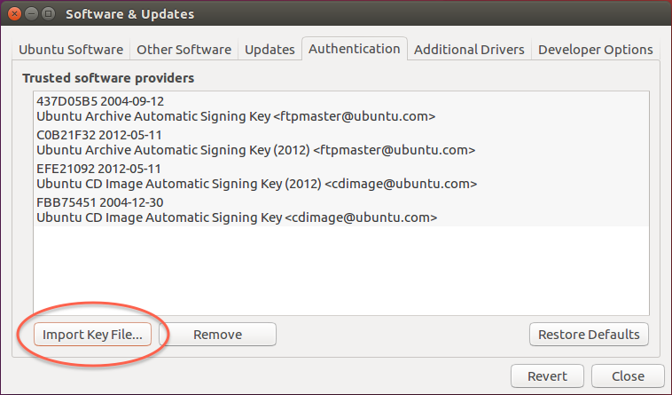
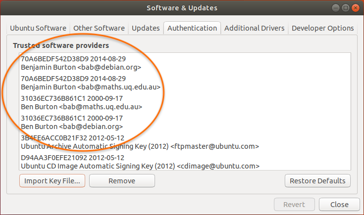
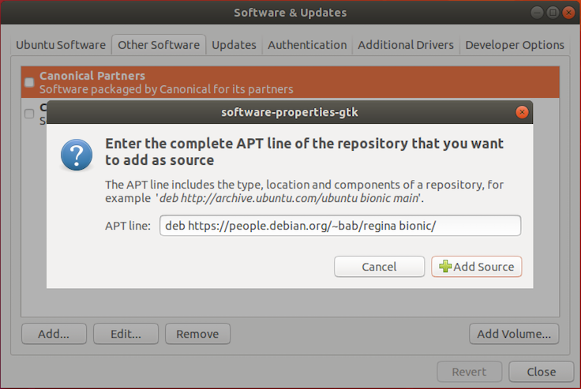
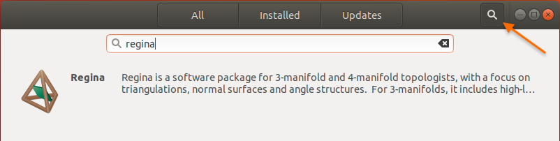
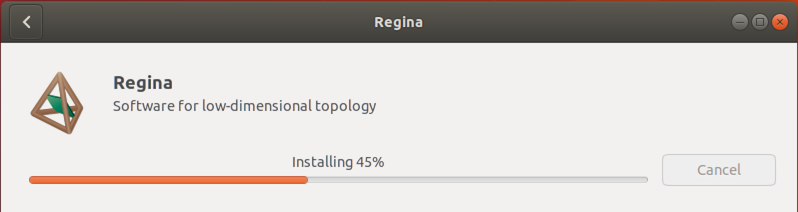

Add Regina's location to your list of repositories. To do this, open the Ubuntu Software application and select Software & Updates from the main menu.
Under Authentication, import Regina's cryptographic signing keys. This helps keep your machine secure, and Ubuntu may refuse to install Regina without them. You can download Regina's cryptographic signing keys here.

When you import this key file, you should see new keys in the list of trusted software providers, under the names Ben Burton and Benjamin Burton. After the import, you can delete regina-keys.txt if you like.

Under Ubuntu Software, enable the community-maintained free and open-source software (universe) if this has not been done before.

Under Other Software, click the Add... button. When Ubuntu asks you for an APT line, type:
deb https://people.debian.org/~bab/regina bionic/

-
Now close the Software & Updates box. Ubuntu should offer to reload the information about available software. Press Reload, so that Ubuntu can see the new packages for Regina.

Now search for Regina in the Ubuntu Software Centre.

Click on the package name (or icon, or description), and you will see more information. You should ensure that the version is correct (i.e., you are getting the latest version of Regina from this site, not the older version that is already bundled into Ubuntu).
Once you are satisfied that Ubuntu has found the right version, press Install and you are finished!
